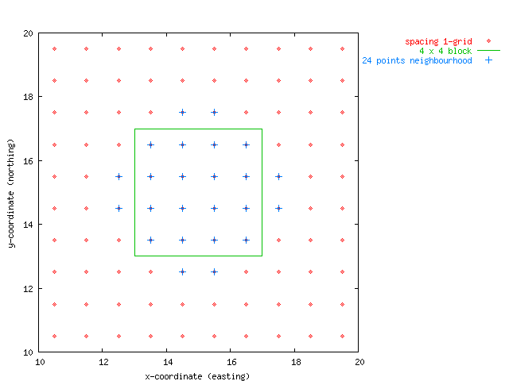

When we want to map a spatial attribute, such as a soil property, in a given region we can do this by regular sampling of the area. For this, we have to choose a sampling density, which leads to the sample size needed. In addition, we can choose to map (estimate) the soil property not for individual (point-support) locations, but rather for (means of) blocks of a larger size. When planning a survey, sample spacing and block size are two factors that can be chosen. Given the variogram of the attribute to be mapped, block kriging prediction errors can be calculated ahead of the survey for any combination of sample spacing, block size and kriging neighbourhood. Often, another ``controllable factor'' is the support of the attribute measured. E.g., point samples of a varying physical size (support) can be taken, or (random) samples from a small area can be mixed. Varying the measurement support has an effect on the variogram of the attribute.
Consider the following map:

The program OSSFIM (optimal sampling schemes for isarithmic mapping) calculates block kriging standard (prediction) errors as a function of sample spacing and block size. This web version uses gstat and gnuplot for this. A two-dimensional grid is formed by a range of sample spacings (x) and block sizes (y), each divided in 10 steps. Given a kriging neigbourhood size, ordinary block kriging standard errors are obtained for each combination of sample spacing and block size on the grid defined. Output is given as a colour graph, or as raw (x,y,z) data. Raw output can be cut and pasted into a spreadsheet (such as Excell) and graphed by a contouring program (such as S-Plus): see example.
Load this form to run the html-version of OSSFIM.
The original OSSFIM program by McBratney and Webster has more options than this web-version: it can handle triangular grids, it can handle the case where the block is centered around a sample point, and it deals with variograms with anisotropy. Gstat can calculate block kriging standard errors in all these cases, but not through this html-interface.
Finer grids can be obtained by adding for instance
-x 100 -y 100to the gstat command line options. This option is not made possible here, as it would put too much load on the server. Instead, gstat should be run locally.
{kind=link}
{kind=link}